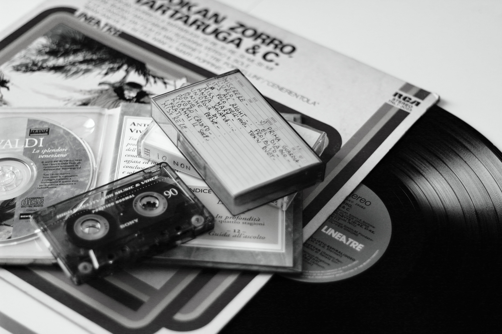

Unplugged is a live album and DVD by the American rock band Alice in Chains, released on July 30, 1996, by Columbia Records. It was recorded on April 10, 1996, at the Brooklyn Academy of Music's Majestic Theatre for the television series MTV Unplugged. The show was directed by Joe Perota and first aired on MTV on May 28, 1996. The MTV Unplugged was Alice in Chains' first concert in two and a half years, and contains live, acoustic versions of the band's biggest hits and lesser-known songs.
Learn MoreBetty is the third studio album by American alternative metal band Helmet, released in 1994 by Interscope Records. It is Helmet's highest charting album in the US. Usually regarded as Helmet's experimental album, it features a broader approach with forays into jazz and blues. Frontman Page Hamilton said, "those things were my indulgences. Helmet's sonic trademarks of crunching riffs and pounding drums still define the album. Betty, along with Meantime and Aftertaste, are considered definitive influences in post-metal.
Learn MoreHand on the Torch is the debut studio album by British jazz rap group Us3. It received much attention because of its mixture of jazz with hip-hop music, with material from popular jazz musicians of the 20th century being reimagined. All samples used on the album are from old Blue Note Records classics: the most famous was Herbie Hancock's "Cantaloupe Island", which Us3 used on the track "Cantaloop (Flip Fantasia)".
Learn More